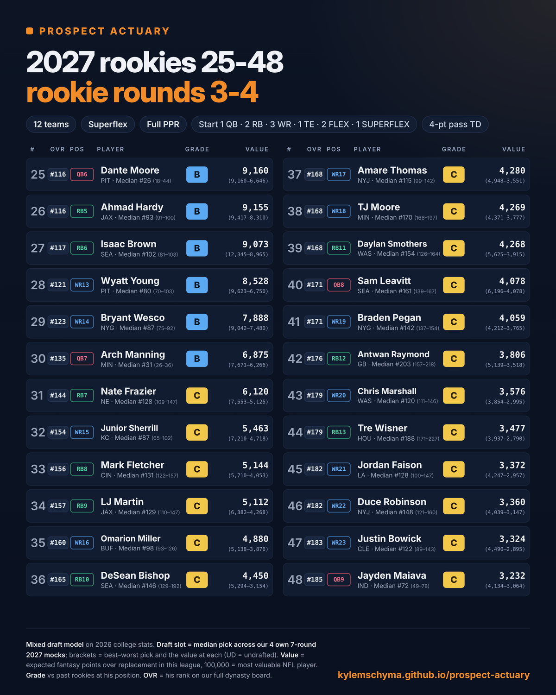

The next 24 in the 2027 class by dynasty value (ranks 25-48, rookie-draft rounds 3-4 in a 12-team league): grade, positional rank and where our mock drafts have each player going.

Value runs from 9,160 at #25 to 3,232 at #48. Mix: 4 QB, 9 RB, 11 WR. Full size
| # | Player | School | Pos | Grade | Value | Mock pick |
|---|---|---|---|---|---|---|
| 25 | Dante Moore | Oregon | QB6 | B | 9,160 | 26 (18–44) |
| 26 | Ahmad Hardy | Missouri | RB5 | B | 9,155 | 93 (91–100) |
| 27 | Isaac Brown | Louisville | RB6 | B | 9,073 | 102 (81–103) |
| 28 | Wyatt Young | Oklahoma State | WR13 | B | 8,528 | 80 (70–103) |
| 29 | Bryant Wesco | Clemson | WR14 | B | 7,888 | 87 (75–92) |
| 30 | Arch Manning | Texas | QB7 | B | 6,875 | 31 (26–36) |
| 31 | Nate Frazier | Georgia | RB7 | C | 6,120 | 128 (109–147) |
| 32 | Junior Sherrill | Vanderbilt | WR15 | C | 5,463 | 87 (65–102) |
| 33 | Mark Fletcher | Miami (FL) | RB8 | C | 5,144 | 131 (122–157) |
| 34 | LJ Martin | BYU | RB9 | C | 5,112 | 129 (110–147) |
| 35 | Omarion Miller | Arizona State | WR16 | C | 4,880 | 98 (93–126) |
| 36 | DeSean Bishop | Tennessee | RB10 | C | 4,450 | 146 (129–192) |
| 37 | Amare Thomas | Houston | WR17 | C | 4,280 | 115 (99–142) |
| 38 | TJ Moore | Clemson | WR18 | C | 4,269 | 170 (166–197) |
| 39 | Daylan Smothers | Texas | RB11 | C | 4,268 | 154 (126–164) |
| 40 | Sam Leavitt | LSU | QB8 | C | 4,078 | 161 (139–167) |
| 41 | Braden Pegan | Utah | WR19 | C | 4,059 | 142 (137–154) |
| 42 | Antwan Raymond | Rutgers | RB12 | C | 3,806 | 203 (157–218) |
| 43 | Chris Marshall | Arkansas | WR20 | C | 3,576 | 120 (111–146) |
| 44 | Tre Wisner | Florida State | RB13 | C | 3,477 | 188 (171–227) |
| 45 | Jordan Faison | Notre Dame | WR21 | C | 3,372 | 128 (100–147) |
| 46 | Duce Robinson | Florida State | WR22 | C | 3,360 | 148 (121–160) |
| 47 | Justin Bowick | Oklahoma State | WR23 | C | 3,324 | 122 (89–143) |
| 48 | Jayden Maiava | USC | QB9 | C | 3,232 | 72 (49–78) |
Updated November 24, 2026 (2026 stats through week 11; mixed draft model; 12 teams, superflex, PPR, 2 RB / 3 WR / 1 TE, 2 FLEX). Value = expected fantasy points over replacement on our 100,000 scale. Mock pick = median pick across our own 7-round 2027 mocks, with best and worst pick in brackets. This image is rebuilt each Wednesday after the weekly refresh. The top 24 are on Top 24 2027 rookies. The live, league-adjustable board is in the 2027 mock draft section, and pick values are on Rookie-pick values.